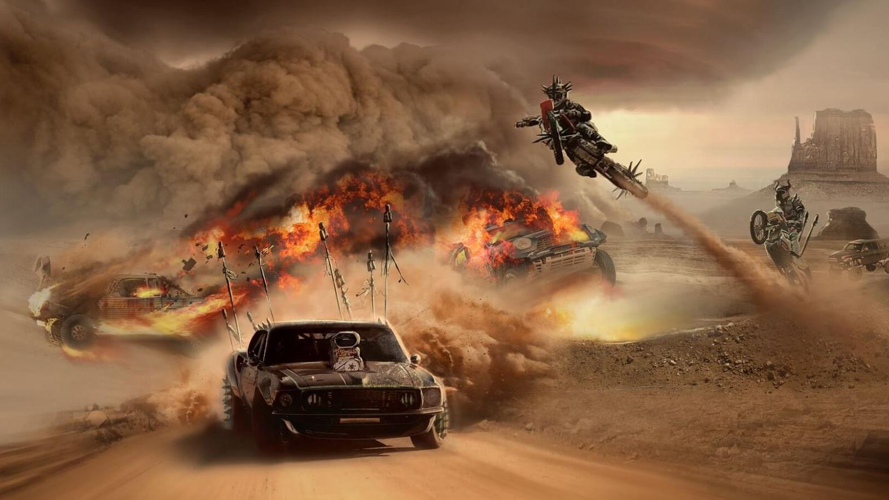
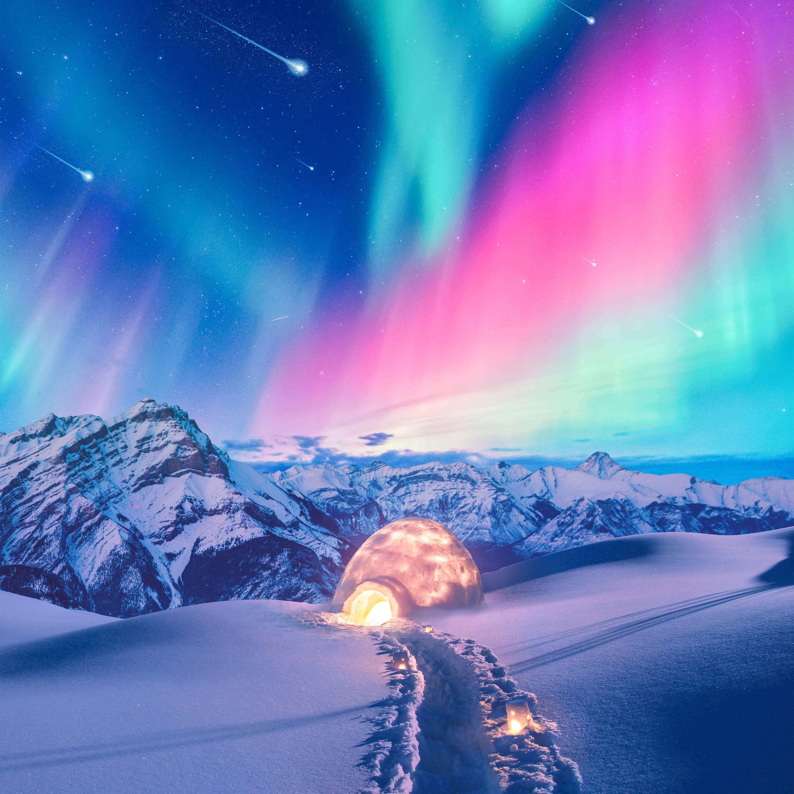
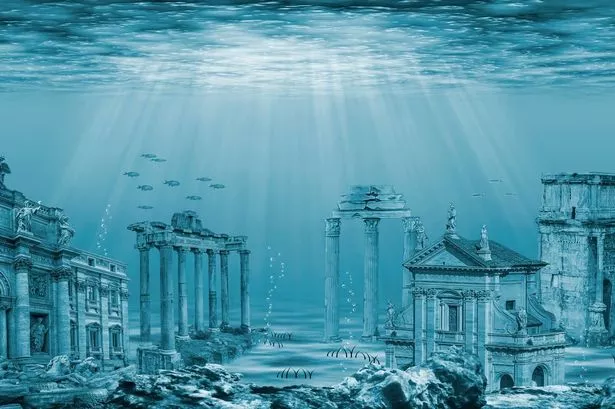
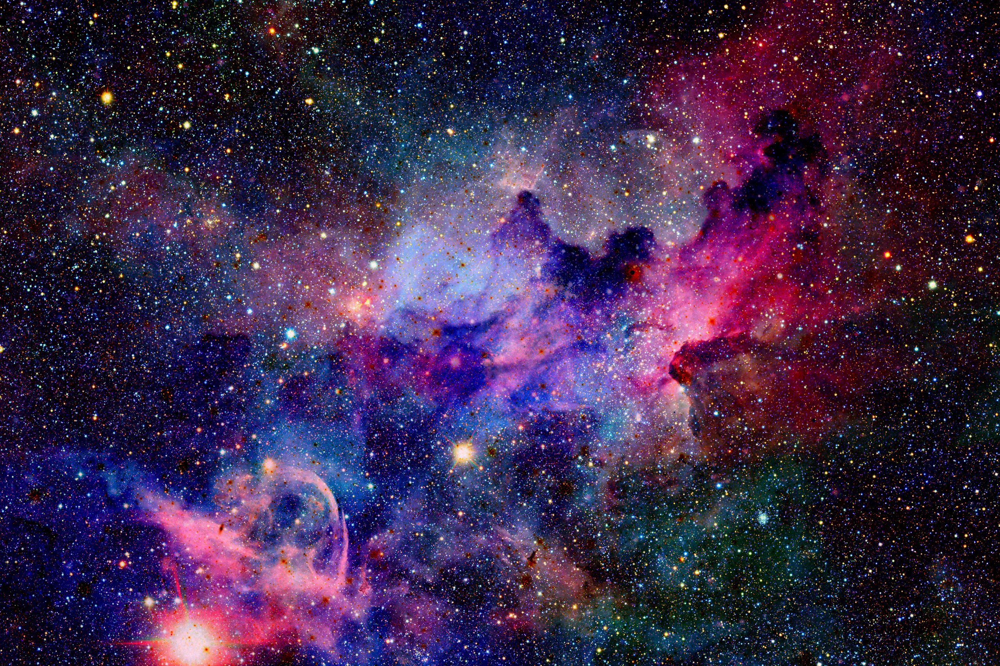

DRIFTING
Drifting is a driving technique where the driver
intentionally oversteers, with loss of traction, while maintaining
control and driving the car through the entirety of a corner.
The technique causes the rear slip angle to exceed the front
slip angle to such an extent that often the front wheels
are pointing in the opposite direction to the turn
(e.g. car is turning left, wheels are pointed right or vice versa,
also known as opposite lock or counter-steering).
Drifting is traditionally done by clutch kicking
(where the clutch is rapidly disengaged and re-engaged with
the intention of upsetting the grip of the rear wheels),
then intentionally oversteering and countersteering.
This sense of drift is not to be confused with the four wheel drift,
a classic cornering technique established in Grand Prix and
sports car racing.

AURORA
An aurora[a] (pl: auroras or aurorae),[b] also commonly
known as polar lights, northern lights, or southern lights, is
a natural light display in Earth's sky, predominantly seen in
high-latitude regions (around the Arctic and Antarctic).
Auroras display dynamic patterns of brilliant lights that appear
as curtains, rays, spirals, or dynamic flickers covering the entire sky.
Auroras are the result of disturbances in the magnetosphere caused
by the solar wind. Major disturbances result from enhancements
in the speed of the solar wind from coronal holes and coronal mass
ejections. These disturbances alter the trajectories of charged
particles in the magnetospheric plasma. These particles, mainly
electrons and protons, precipitate into the upper atmosphere
(thermosphere/exosphere). The resulting ionization and excitation
of atmospheric constituents emit light of varying colour and complexity.
The form of the aurora, occurring within bands around both polar
regions, is also dependent on the amount of acceleration imparted
to the precipitating particles.
Most of the planets in the Solar System, some natural satellites,
brown dwarfs, and even comets also host auroras.

ATLANTIDA
Atlantis (Ancient Greek: Ἀτλαντὶς νῆσος, romanized:
Atlantìs nêsos, lit. 'island of Atlas') is a fictional island
mentioned in Plato's works Timaeus and Critias as part of an allegory
on the hubris of nations. In the story, Atlantis is described as
a naval empire that ruled all Western parts of the known world,
making it the literary counter-image of the Achaemenid Empire.
After an ill-fated attempt to conquer "Ancient Athens,"
Atlantis falls out of favor with the deities and submerges into
the Atlantic Ocean. Since Plato describes Athens as resembling
his ideal state in the Republic, the Atlantis story is meant to bear
witness to the superiority of his concept of a state.
Despite its minor importance in Plato's work, the Atlantis story has
had a considerable impact on literature. The allegorical aspect
of Atlantis was taken up in utopian works of several Renaissance writers,
such as Francis Bacon's New Atlantis and Thomas More's Utopia.
On the other hand, nineteenth-century amateur scholars misinterpreted
Plato's narrative as historical tradition, most famously Ignatius L.
Donnelly in his Atlantis: The Antediluvian World. Plato's vague
indications of the time of the events (more than 9,000 years before
his time) and the alleged location of Atlantis ("beyond the Pillars
of Hercules") gave rise to much pseudoscientific speculation.
As a consequence, Atlantis has become a byword for any and all supposed
advanced prehistoric lost civilizations and continues to inspire
contemporary fiction, from comic books to films.
While present-day philologists and classicists agree on the story's
fictional nature, there is still debate on what served as its
inspiration. Plato is known to have freely borrowed some of his allegories
and metaphors from older traditions, as he did, for instance, with
the story of Gyges. This led a number of scholars to suggest
possible inspiration of Atlantis from Egyptian records of the Thera
eruption, the Sea Peoples invasion,[15] or the Trojan War.
Others have rejected this chain of tradition as implausible and insist
that Plato created an entirely fictional account, drawing loose inspiration
from contemporary events such as the failed Athenian invasion of Sicily
in 415–413 BC or the destruction of Helike in 373 BC.

STARGAZING
A star is an astronomical object comprising a luminous spheroid
of plasma held together by self-gravity. The nearest star to Earth is the Sun.
Many other stars are visible to the naked eye at night, but their immense
distances from Earth make them appear as fixed points of light. The most
prominent stars have been categorised into constellations and asterisms, a
nd many of the brightest stars have proper names. Astronomers have assembled
star catalogues that identify the known stars and provide standardized
stellar designations. The observable universe contains an estimated
1022 to 1024 stars. Only about 4,000 of these stars are visible to the naked
eye,[1] all within the Milky Way galaxy.
A star's life begins with the gravitational collapse of a gaseous nebula
of material composed primarily of hydrogen, along with helium and trace
amounts of heavier elements. Its total mass is the main factor determining
its evolution and eventual fate. A star shines for most of its active life
due to the thermonuclear fusion of hydrogen into helium in its core.
This process releases energy that traverses the star's interior and radiates
into outer space. At the end of a star's lifetime, its core becomes a stellar
remnant: a white dwarf, a neutron star, or—if it is sufficiently
massive—a black hole.
Stellar nucleosynthesis in stars or their remnants creates almost all
naturally occurring chemical elements heavier than lithium. Stellar mass
loss or supernova explosions return chemically enriched material to the
interstellar medium. These elements are then recycled into new stars.
Astronomers can determine stellar properties—including mass, age, metallicity
(chemical composition), variability, distance, and motion through space—by
carrying out observations of a star's apparent brightness, spectrum,
and changes in its position in the sky over time.
Stars can form orbital systems with other astronomical objects, as in the case
of planetary systems and star systems with two or more stars. When two such
stars have a relatively close orbit, their gravitational interaction can
significantly impact their evolution. Stars can form part of a much larger
gravitationally bound structure, such as a star cluster or a galaxy.